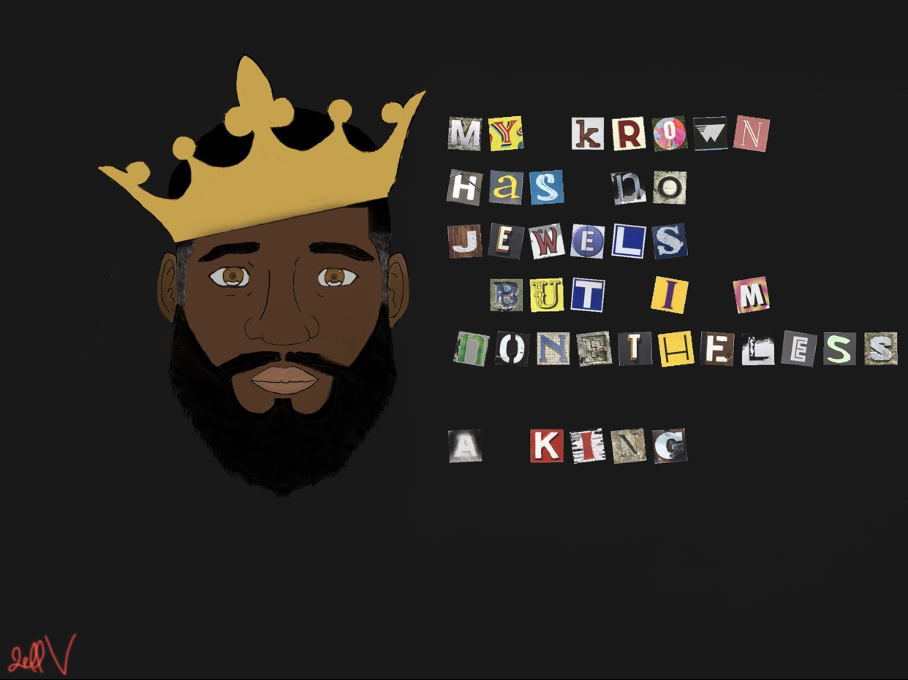

Ever since I was young I would sit infront of the tv with my favorite show on (Dragon Ball Z) and recreate the charaters on a peice of paper. Early on I always knew that I love seeing something and creating my own version of it. I come from a family of creatives and a family of procrastinators lol, so I've been of an on in my artistict journey. Nonetheless it will always be a passion of mine and given the current climate of the world my inpsiration has been sparked again.
I love being a creative so the ability to bring things to life makes me feel great especially when it gets executed exactly the way it was in my head. I like taking things and putting my own spin on it, so I like to label myself a reimaginer, lol if thats a word
Nonetheless A King
Lately I've been utilizing my 2016 Ipad Pro w/ the gen 1 apple pencil to draw since the sketchbook app has all the tools I need all in one place. It's been a game changer and the allowed me to do things that I could never before do.
This Website is dope for anyone who wants to jump into drawing with an Ipad. I have attached the link to it Here check it out, I highly reccomend it.